4. Script System
4.1. Introduction to the Script System
Attention
The CETONI Elements Script system allows you to control and automate processes. Check the created scripts/programs as well as parameter entries before you execute them for the first time! CETONI assumes no liability for direct and/or indirect damage to your system or external hardware and software components caused by the scripts/programs you have created or by the entry of parameters that are not suitable or unfavorable for your specific application.
The software provides a powerful scripting system to set up automated process sequences.
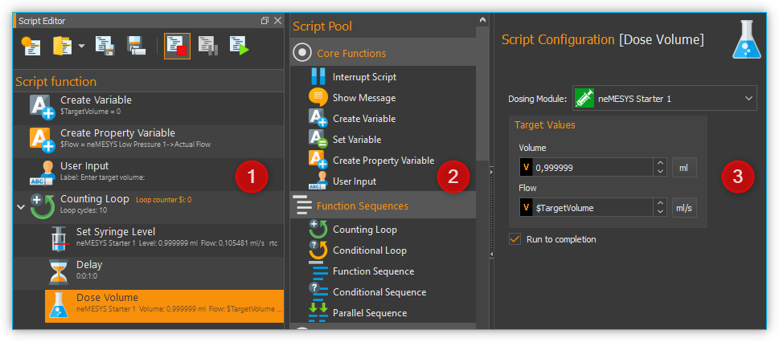
The script system work bench consists of the following three main parts:
Script Editor – shows the script programmed by the user as a function tree. It also features buttons for controlling script files and their execution.
Script Pool – contains all available script functions ordered in device categories.
Script Configuration – is used to configure the parameters of individual script functions.
4.2. Script Pool
Activate the Scripting button in the side bar to show the Script Pool.
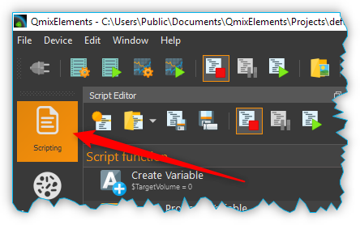
In addition to the Script Pool, the Script Configuration area is also shown. The Script Pool contains all script functions that are available for programming scripts. The script functions are grouped into categories. In addition to a set of core functions, each device and each plug-in registers its own specific script functions in a separate category.
The user can open or close the categories in the Script Pool at any time. To open or close the function list of a category, simply double-click on the category name (figure below).
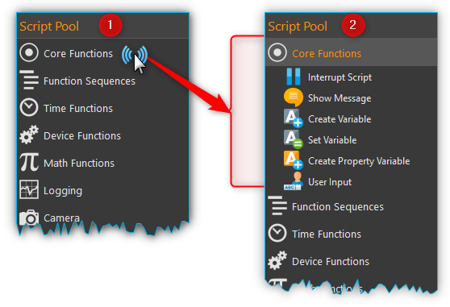
4.3. Script Editor
4.3.1. Introduction to Script Editor
The Script Editor is used for the graphic programming of scripts. The following items are numbered in the figure below:
Toolbar – is for loading, saving, and controlling the sequence of scripts.
Function tree – shows a tree like program structure.
The currently executed function is highlighted in green.
When you select a function by clicking, it is highlighted blue.
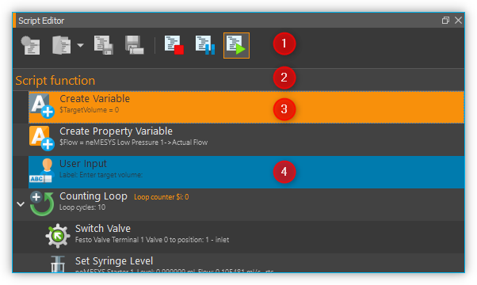
Each single function is displayed in the function tree in a separate line. In this line all the important function parameters are visible for you (see figure below):
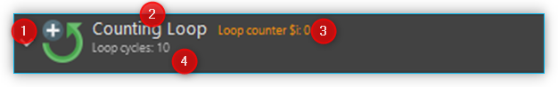
On the left side you will find the graphic icon of the function ❶. Immediate right of the icon at the top ❷ you will find the function name. Status information can be found to the right of the function name ❸. For many functions, these status information are visible only during the execution and are subject to change. Directly below the function name is a summary of all important function parameters ❹, that you have configured in the configuration area.
The Script Editor is a movable and dockable window: you may move and dock the Editor to another position within the main software window. To do this, drag & drop the window via the title bar to its new location using the computer mouse. If the Editor window is not visible, you may first have to activate it via in the main menu (figure below).
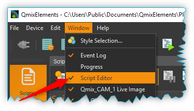
You can change the scaling in order to increase the clarity or adjust the display of the editor to suit your requirements. To do this, right-click in the editor to open the context menu and select the size of the display in the submenu Set Item Scaling:
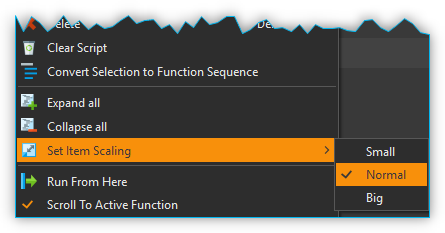
The following sizes are available:
Small – very compact display for maximum clarity in complex function processes, the function parameters are no longer displayed.
Normal – normal size
Big – the icons and the function names are enlarged for optimal readability
4.3.2. Toolbar
Generates a new, empty script. |
|
Loads an existing script file into the Script Editor. |
|
Saves the currently active script. |
|
Saves the currently active script into a new script file. |
|
Stops the execution of the current script. By clicking the start button, the complete program will be restarted from the beginning. |
|
Request Script Stop - clicking this button sets the
|
|
Pauses the execution of the current script. By clicking the start button, the execution will resume from its current position. |
|
Starts the execution of a script or resumes a script after an interruption. |
{kind=link}
{kind=link}
{kind=link}
{kind=link}
{kind=link}
{kind=link}
{kind=link}
{kind=link}
Tip
You can also load script files easily via drag & drop. Simply drag a script file from your file system over the script editor and drop it there.
{kind=link}
{kind=link}
{kind=link}
{kind=link}
{kind=link}
{kind=link}
{kind=link}
{kind=link}
{kind=link}
{kind=link}
{kind=link}
{kind=link}
4.4. Script Configuration Panel
4.4.1. Overview of Script Configuration Panel
The configuration panel contains all controls for configuring the script function that is currently selected in the Script Editor.
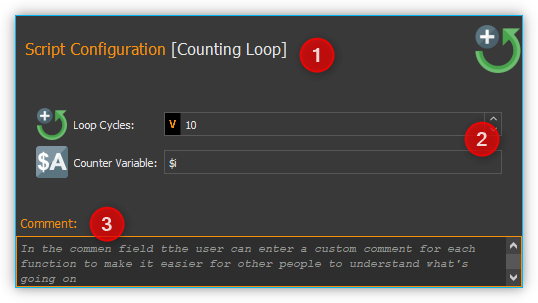
The configuration area consists of:
header with the name of the currently selected function
input- and control elements of the function
comment box to enter any commentary
The input- and control elements ❷ are different for each script function. But all functions provide some common controls like the function caption ❶ in the header and a comment box ❸ at the bottom of the configuration area.
4.4.2. Changing Function Caption
In the header of the configuration area you can change the caption of the function. It allows you to use “talking” function names that make it a lot easier for you or third parties to read and understand your scripts later.
To change the function name, you can either click with the left mouse button on the function name in the header or you can click on the name with the right mouse button and select the context menu item, (see figure below).
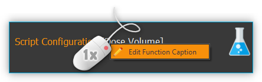
In the input dialog that now appears, you can enter a new name for the function.
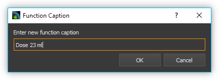
The following example shows a short program with the default function names on the left side and the same program with own function names on the right side:
Default function names |
Application-specific names |
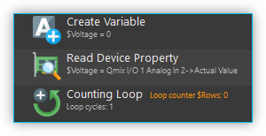 |
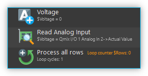 |
Tip
Enhance the readability, understandability and maintainability of your scripts through the use of speaking, application-specific function names.
4.4.3. Enter Comment
In the comment field you can enter a comment that will allow other users to understand your scripts better and to follow the flow of execution easier.
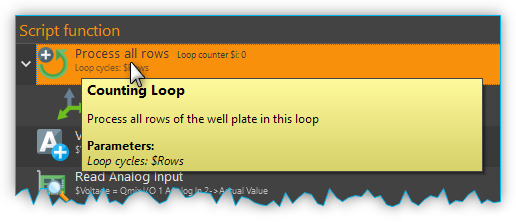
When you move the mouse pointer over a function in the Script Editor the comment of this function will be shown in a message box (see figure above). So you can read the comment of a function without having to open the configuration area of that function.
4.5. Programming
4.5.1. Adding Functions
Functions are activated via drag & drop from the Script Pool to the Script Editor. To do this, proceed as follows:
In the Script Pool, left-click on the function that you want to insert ❶ and hold down the mouse button.
Move the pointer to the desired position within the Script Editor swindow.
As soon as you release the mouse button ❷, the selected function will be inserted into the Script Editor.
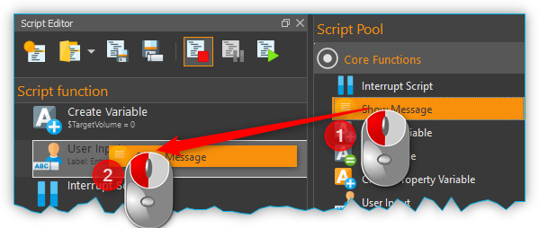
The function is inserted according to where the mouse pointer is positioned when you release the mouse button. The following scenarios are possible (figure below):
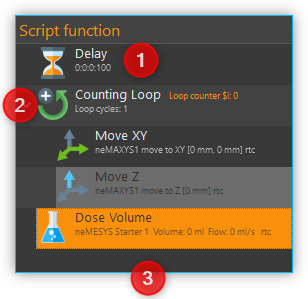
If you release the mouse button atop an existing function, the new function will be inserted immediately before that existing function.
If the mouse button is released atop a function sequence (for example, a loop), the new function will be inserted at the end of that sequence.
If the mouse button is released on an empty area at the end of the function tree, the function is added at the end.
4.5.2. Selecting Functions
To move, copy or delete functions, you must first select them. You can either select a single function by clicking on it, or you can select a continuous sequence of functions at the same hierarchy level.
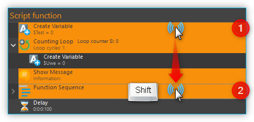
When you select an item in the usual way with the left mouse button, the selection is cleared and the new item is selected ❶. However, if you press the Shift key while clicking on an item ❷, all items between the current item and the clicked item are selected or unselected, depending on the state of the clicked item.
4.5.3. Moving Functions
Analogous to inserting a new function from the Script Pool, you can move the functions to new positions within the function tree via drag & drop. Again, the same insertion rules apply as above.
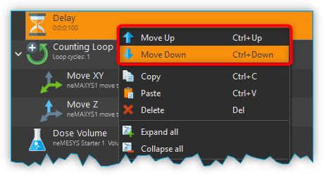
There is alternative way for moving functions up and down the list: First, make a right mouse click on the function that is to be moved. This will open a context menu from which you may then select Move up or Move down, respectively (figure above). Alternatively, you can use the keyboard with the Ctrl + ↑ or Ctrl + ↓ shortcuts.
This latter method may only be used to move functions up or down within the current sequence. If you want to move a function to a completely different position within the function tree, this can only be done via drag-&-drop.
Important
Move up and Move down only moves the current function. Even if several functions are selected, only the current function is moved. If you want to move the entire selection, you can do this by dragging and dropping.
4.5.4. Deleting Functions
There are two ways to delete functions:
Select the functions you want to delete and then click the context menu entry Delete.
Select the functions you want to delete and then press the Delete key of your keyboard.
4.5.5. Copying Functions
Similarly, functions can be copied either by using the context menu via the mouse or using key combinations via the keyboard. If you work with the context menu, simply select Copy and then Paste from the menu (figure below); with the keyboard, use the Ctrl + C shortcut to copy and Ctrl + V to paste.
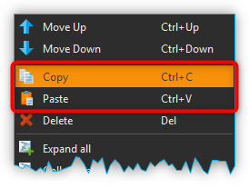
This is how you copy a function to a new position:
Select the functions you want to move.
Copy the functions via Copy of the context menu or via the keyboard and Ctrl + C.
Select the function before which you want to insert the copied function by left-clicking it.
Paste the copied functions via Paste of the context menu or via the keyboard and Ctrl + V.
To insert the same functions at multiple points of the function tree simply repeat steps 3 and 4 (above).
4.5.6. Grouping Functions
To improve the clarity and readability of your script, you can quickly and easily group sequences of functions into function sequences. To do this, simply select a contiguous set of functions, and then click Convert Selection To Function Sequence in the context menu.
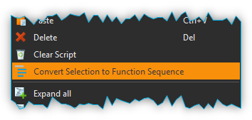
The selected functions are now replaced by a function sequence containing the selected functions.

4.5.7. Editing Function Parameters
As soon as you select a function from the function tree, the operating elements appear in the Script Configuration area that allow you to configure the selected function. Edit the function parameters as required.
4.5.8. Showing Function Tooltip
If you move the mouse cursor over a function, a tooltip window is displayed for this function after a short time (see figure below). In this window, you will get all information about this function at a glance: function name ❶, user comment or function description ❷ and function parameters ❸.
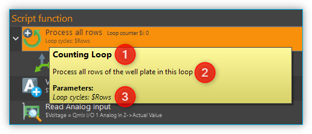
4.6. Variables
4.6.1. Introduction to variables
The script system of supports the use of variables. Within script programs, variables serve as containers for calculated and device values. Their values are generated during program execution from, for example, loop counts or sensor data. Each variable is defined by a name. Script functions that support the use of variables may then use the values stored in these containers, e.g., to trigger value-dependent events.
4.6.2. Setting Variables
Before variables may be used by a script, such variables need to be defined. There are two possibilities to setup variables:
Explicit: Variables are defined explicitly by the user, e.g., via the function Create Variable.
Implicit: Implicit variables are created via functions that offer variables by default, such as the counter of the Counting Loop function.
4.6.3. Naming Variables
There are some important requirements to keep in mind when naming
variables: Every variable is called within a program script via an
essentially freely definable name. This name serves to uniqly
identify that variable; different names signify different variables. The
$-prefix clearly identifies a name and its use as a variable. The
scripting system is case sensitive: $Var is different variable than
$var.
Additionally, the following rules apply when naming variables:
Variable names have to start with the Dollar symbol ($) and must not themselves contain a $-symbol.
Only alphanumeric characters are allowed (a-Z, 0-9).
Special characters (such as, $, &, /, -, …) are not allowed.
Variable names must not start with a number.
Tip
You can display the contents of variables using the Show Message function, e.g. to check the results of calculations.
4.6.4. Visibility Range of Variables (Scope)
The visibility range (scope) of a variable is that part of the program within which that variable is visible, i.e., available. Scripts are trees with an essentially unlimited number of branches and levels; a variable, i.e., the value it returns, is only visible, i.e., available to be used, at that level at which it has been defined plus all its sub-levels.
The following example illustrates the scope of variables:
In the following example program the variable $a is visible in the red
marked area - i. e. usable by script functions (figure below):
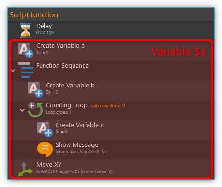
Variable $b, on the other hand, is only visible within a specific
function sequence (figure below).
The counter variable $i of the counting loop is only visible in those
functions that are in the counting loop:
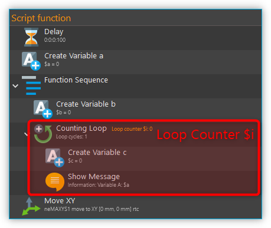
The scope of variable $c , which has been setup within
the counting loop, is only available within that counting loop, too, as
no other sublevel has been added at this point:
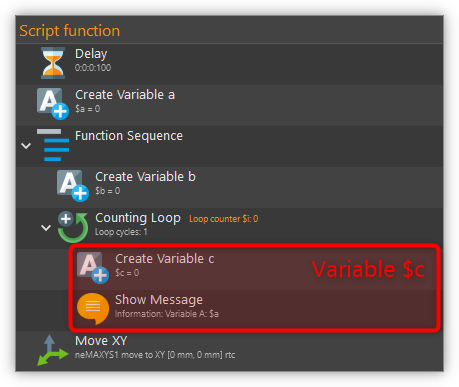
It is important to note that, if two variables have the same
name, the variable that has been defined later (i.e., at a lower level)
will shadow the variable defined earlier (i.e., at a higher level).
In the example above, if $c would have been named again as $b,
the later-defined value (i.e., 2) would replace the earlier-defined value
(i.e., 1).
Important
If a lower-level variable has the same name as a higher-level variable, the lower-level variable will supersede the higher-level variable. That is, functions at the lower level cannot access the value of the higher-level variable of the same name and will use „newer“ value instead.
4.6.5. Using Variables
Variables can be used with all functions that support them. Calling a
variable to, e.g., set or calculate a value, requires the use of the
dollar symbol ($) as a prefix: To use (call write to) the variable a,
the required syntax is: $a.
Important
Variables get assigned a valid value only after they have been assigned a value via being run through a relevant function (e.g., Create Variable). If you are using the action Run From Here to start a script, variables may not have been assigned a valid value yet if the respective assignment function follows later in the sequence or has been skipped.
Functions that support the use of variables have the relevant input boxes highlighted by a yellow V (see figure below). Here you can insert the name of a variable instead of a numeric value that is to be used subsequently within the relevant section of the program script.
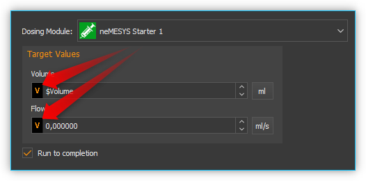
Tip
Nearly all input fields that support variables allow for direct access of device process data via device property identifiers (see Device Property Identifiers).
4.6.6. Auto-Completion of Variable Names
Input boxes that support the use of variables, feature auto-completion to aid the selection and input of valid variable names: Upon inserting the $-symbol, a list will appear that contains all variable names defined so far (see figure below).
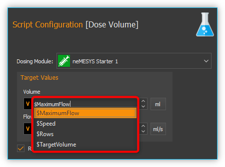
Every additional character that you enter will cause a filtering of that list according to the character sequence inserted thus far. You may use either the ↑ or ↓ of your keyboard or the mouse to select a name from that pre-filtered list. Accept the selection by pressing the Enter key.
4.7. Device Property Identifiers
Nearly all input fields that support variables (see Using Variables) allow for direct access of device process data via device property identifiers. Just click with the right mouse button in the input field and select the menu item Insert device property (see figure below).
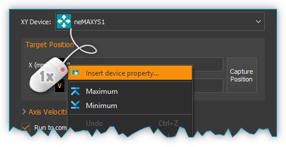
A dialog for selecting the process data is displayed (see figure below).
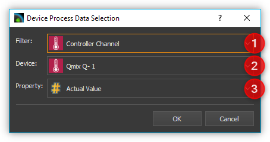
In this dialog you can select which type of device you want to access in the selection box Filter ❶. Select a specific device in the selection box Device ❷ which contains the filtered list of devices. Finally select the process data to be accessed in the Property ❸ field.
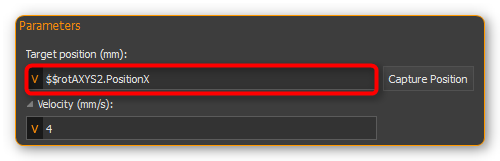
The selected process data identifier will be entered into the input field. Similar to variable names, the process data identifiers have a particular form:
$$DeviceName.DeviceProperty
Each identifier starts with two dollar signs. A point separates the device name from the device property name. The entire process data identifier must not contain spaces or other special characters.
Important
The device name and the name of the process data have a normalized form. All spaces are removed and replaced by underscores. The device name is the unique name of each device and may be different from the device caption that can configured by the user.
When the script function is executed, the process data is read from the device and used as function parameter for the script function.
4.8. Programming your own script functions
4.8.1. Create a script function
In addition to the script functions available in the script pool, you have the option of programming your own script functions to use them later in your scripts. To implement an own script function, proceed as follows:
Step 1 – Create a new script
Click on the button Create New Script ❶ to create an empty script. Then click on the Save Script button ❷ to give the script function a name and then save it with this name. The name of the script function is then displayed in the script editor header ❸. In this example we use the name AddValues because we want to implement a simple function that adds two values.
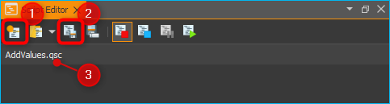
Step 2 – Define function parameters
You can define function parameters and return values for your function. Function parameters are values that are passed to the function when it is called. Return values are values (e.g. results of calculations) that are returned by the function to the calling script. Up to 10 function parameters and up to 10 return values can be defined for each function.
To define parameters and return values, click with the mouse on a free area in the script editor or on the script editor’s header ❶ (figure below), where the name of the function is displayed.
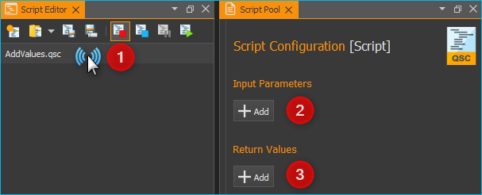
The script pool now shows the configuration window for the script. Here you can add function parameters ❷ or return values ❸ by clicking on the Add buttons.
For this example, click twice on the Add button ❷ to add two function parameters. Then click on the first parameter name (figure below) and give it a more meaningful name: Summand1:
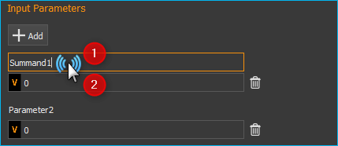
Then enter the default value 0 ❷ for the parameter. Now click on the second parameter name and rename it to Summand2.
Step 3 – Define return values
Now click once on the Add button in the Return Values ❶ area (figure below) to add a return value. Then click on the first return value name and rename it to: Sum.
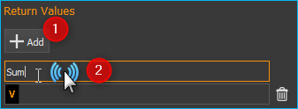
Now save the script function to store your changes. The configuration area of the script function should now look like this:
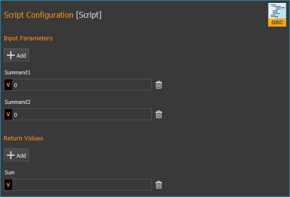
Step 4 – Implement function logic
All function parameters and return values are available within the
script as variables that can be read and written. I.e. the script can
now read the transferred values from the two variables $Summand1 and
$Summand2 and save the result of the calculation in the variable
$Sum and thus transfer it back to the calling script.
To perform the addition, insert a Set Variable script function into the script and set the type of the variable to JavaScript Expression.
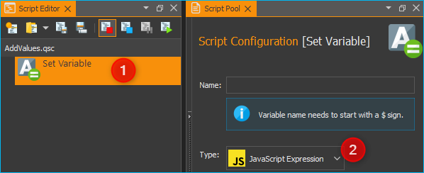
In the Name field, enter the name ❶ (see figure below) of the variable
which should store the value – in this case, the variable $Sum.
In the input field for the JavaScript code ❷ you can now enter the addition of
the two variables $Summand1 and $Summand2.
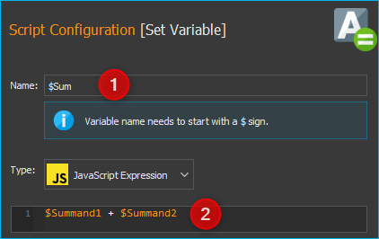
Now save the script function. Next, you can test the script function. Click on the Run Script button ❶ (figure below) - no error should occur and the result of the addition should be displayed in the script editor in the Set Variable function ❷.
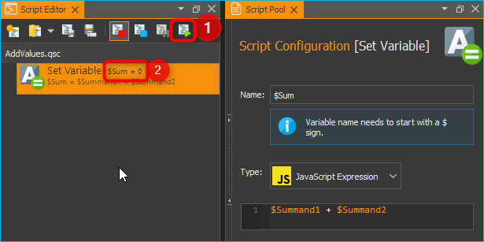
If errors occur, correct them and save the script function again.
4.8.2. Use your own script functions
Click on the button Create New Script ❶ to create an empty script. Then click on the Save Script button ❷ to give the script function a name and then save it with this name. The name of the script function is then displayed in the script editor header ❸. In this example we use the name CustomScriptFunctionTest.
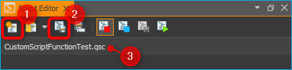
Add a Create Variable function to the script as the first function and configure the function as follows.
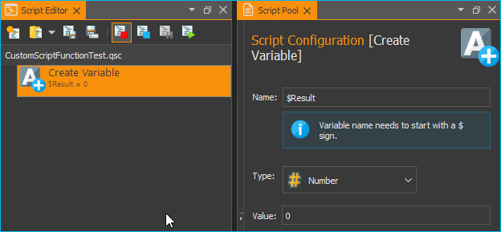
Now insert a Script Function Call from the Core Functions category into the script as the second function.

A file selection dialogue pops up where you can select the external
script function to be called by the script. Select the example function
AddValues.qsc that we created in the previous section. For the
function parameters Summand1 and Summand2, enter two values as a
test, e.g. 4 and 3. You can also use script variables in these fields.
Enter the variable $Result in the return parameter Sum. In other
words, the return value of Sum is stored in the variable $Result.
The function should now be configured as follows:
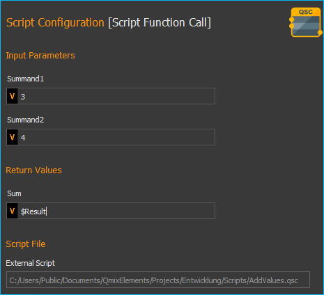
Now add a ShowMessage function as the last function to output the
value of the $Result` variable. Enter the following in the
Message field:
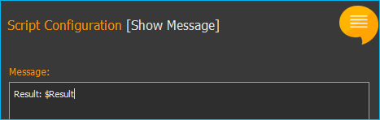
Your script should now look like this:
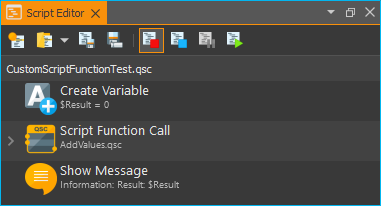
Now run the script. The Show Message function should show you the
result of the call to AddValues.qsc in a window and in the event log.
By using your own script functions, you can structure your script and break it down into reusable and easily maintainable individual components.
4.9. Script Autostart
The script system can be configured to automatically load and start a script after successfully connecting to the device hardware. The dialog with the corresponding settings can be opened via the menu item in the main menu of the application.
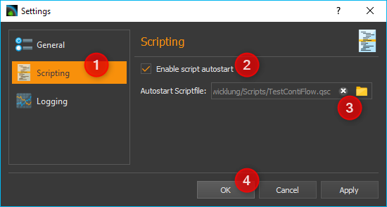
You can now configure the script autostart in the Settings dialog of the application. First select the settings category Scripting ❶. Now you can activate the script autostart ❷ in the right area. You can select the script file to be loaded and executed via the Autostart Scriptfile ❸ input field. If this field is empty, the script is executed which is loaded when the application is started, i.e. the script which was open when the application was last used. Finish the configuration by clicking OK ❹.
If you want the software to start up automatically and execute a script after your computer has booted, then proceed as follows:
Insert QmixElements.exe into the Windows Autostart to start the software automatically after booting the computer.
Open the dialog with the global settings via the main menu of the application ().
Select the General settings category and activate the auto connect option. This will cause the software to automatically connect to the device hardware after start-up.
Then select the Scripting setting category to configure the script autostart
4.10. Script Error Handling
Errors may occur during the execution of individual script functions, e.g. if parameters are outside the value range or if errors occur during communication with devices. You can configure how the script system should react to such errors in the global settings dialog (select in the main menu of the application ).
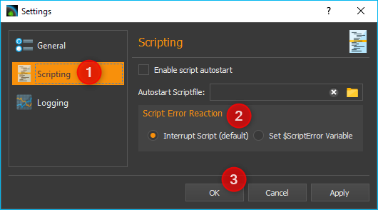
First select the Settings category Scripting ❶. In the Script Error Reaction section ❷ you can now configure the reaction in case of an error.
You can select the following options:
Interrupt Script (default)– This is the error reaction that is active by default. If an error occurs in the script, the script stops at the function that caused the error and an error message is displayed in the event log. The script can then only be continued by clicking the start button. This may not be desirable for automatic control via the I/Os of a PLC. In this case select the following type of error handling.
Set $ScriptError Variable – If an error occurs, the global script variable
$ScriptErroris set to true and script execution continues. In this case, you must deal with the error handling in the script by checking the status of this error variable after a function call.
Complete the configuration by clicking on OK ❸